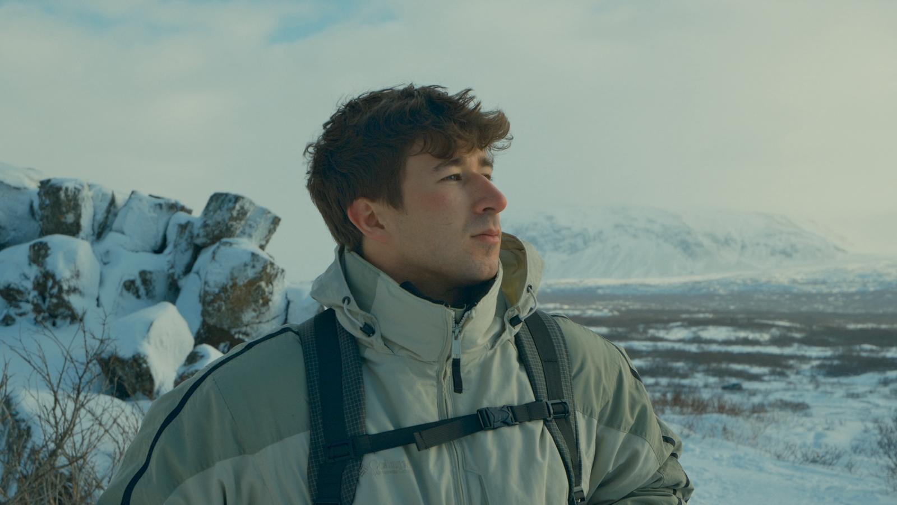
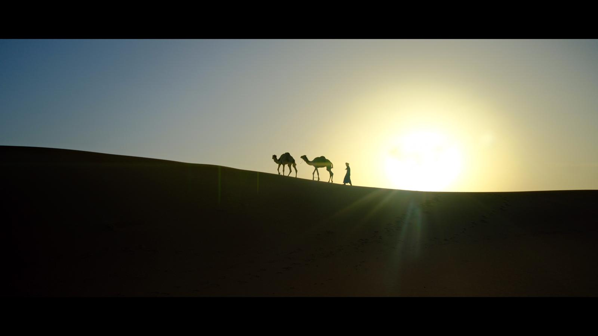
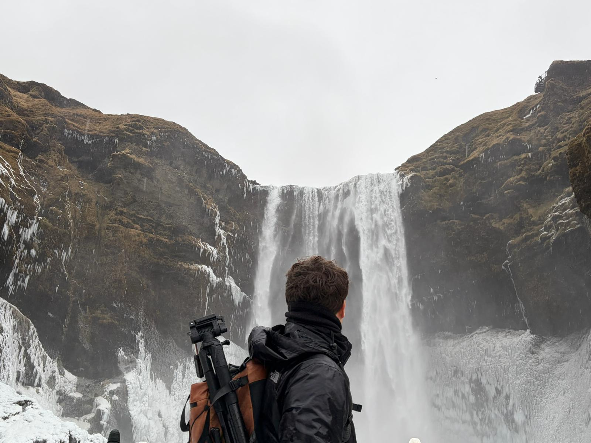
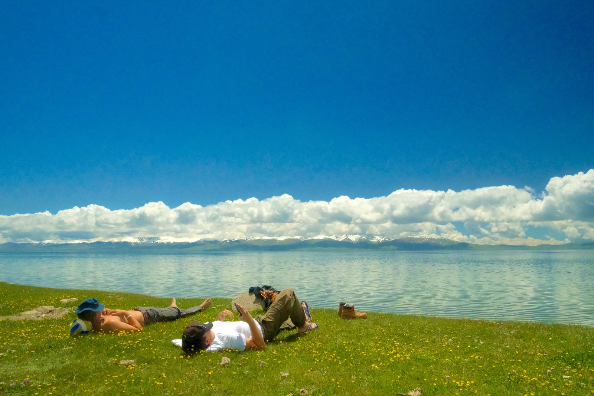
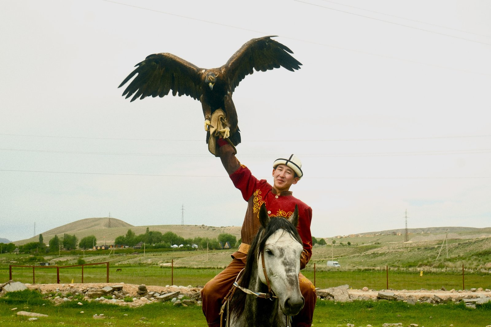

Viajero, narrador visual y creador de contenido centrado en la aventura auténtica. He producido material en el Sáhara (Erg Chegaga, 5 noches off-grid), Islandia buscando auroras y Kirguistán conviviendo con nómadas, cazando con águilas y durmiendo en yurtas. Trabajo con color grading propio, adaptado al entorno y a la historia de cada lugar.
Instagram · @victor.escri
TikTok · @victor.escri
YouTube · @Victorescri99
Portfolio · victorescribano
Reels, fotos y stories con tu producto en uso real. Derechos de uso incluidos.
Documento un destino entero con tu producto integrado de forma natural.
Relación a largo plazo, presente de forma genuina en mis aventuras.
Próximo destino en preparación. Tu producto viaja conmigo y aparece en uso real, en un entorno exigente, con contenido cinematográfico.